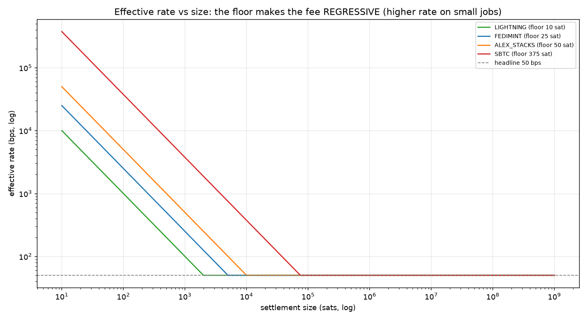
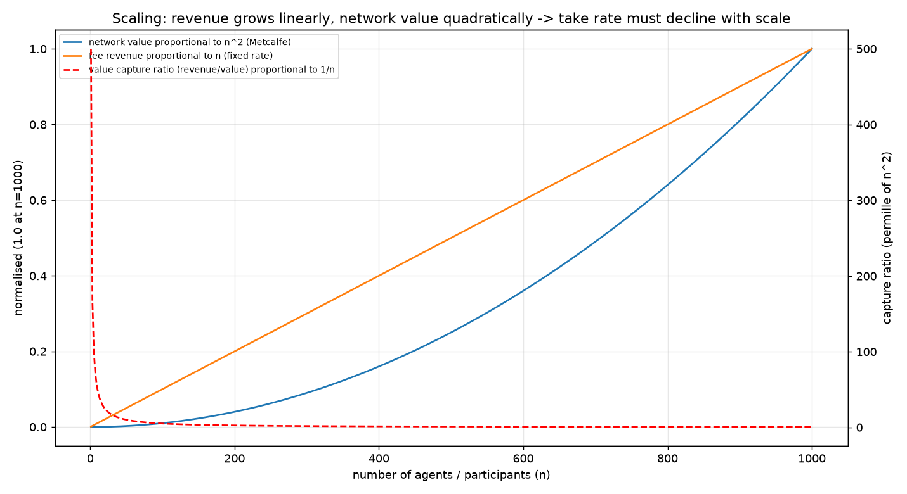
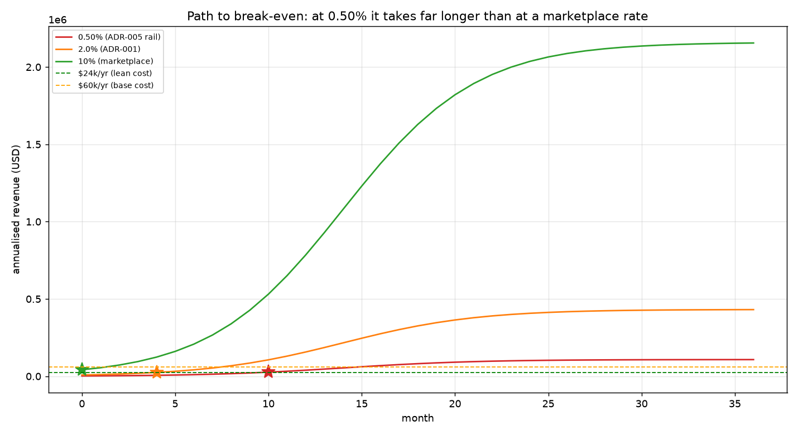
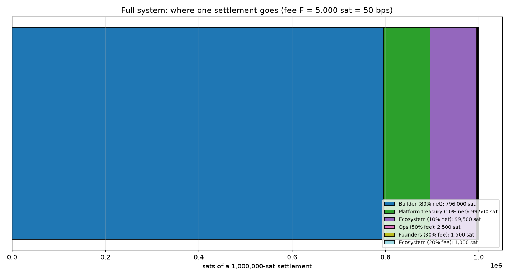

01The decision — two products, one split rule
The “20× spread” was never one rate argued three ways. It is two different products at two different price points, with a single split rule applied to whatever the platform’s take is.
02The rail rate — dynamic, floor-bounded
effective_fee = max(amount × decayed_bps/10000, rail_floor) × load_factor. Volume decay
50→25→15→10 bps at 0.1/1/10 BTC (hysteresis 5% band); per-rail floor cost × 1.25;
load clamp [1.0, 3.0]. Micro-settlements are dominated by the flat floor; percentage pricing takes over at scale.


| Rail | Floor (sat) | Rail | Floor (sat) |
|---|---|---|---|
| Lightning | 10 | Statechain | 125 |
| Fedimint | 25 | RGB | 312 |
| AlexStacks | 50 | sBTC | 375 |
| Babylon | 50 | EVM/ERC-8183 | 75 |
03Product comparison — worked example (1,000,000 sat)
04The resolved 20× divergence (was market #358)
On a 100,000-sat TIER_1 Lightning settlement (F=500 sat), the split was documented three ways. ADR-007 chose A (split the fee). This table is kept as the record of why the decision mattered.
| Reading | Basis | Ops | Founders | Ecosystem | Total take |
|---|---|---|---|---|---|
| A — split the fee F chosen | ADR-004 §3.4 · fee.rs · fee_calculator.ts | 250 | 150 | 100 | 50 bps (0.50%) |
| B — split a 10%-of-net slice (+F) | ADR-001 §1.2 as written · protocol_fee_settlement.ts | 4,975 | 2,985 | 1,990 | 1,045 bps (10.45%) |
| C — escrow as wired (F + 80/10/10 on net) | job_card_escrow.ts | 9,950 | 0 | 9,950 | 2,040 bps (20.40%) |

05Comparables — where the band sits
Payment rails / DeFi sit at 0–3%; marketplaces ~10–15%; app stores ~15–30%. x402’s protocol layer charges 0%, so Conxian’s edge must be the trust/attestation/escrow/SLA layer, not a headline fee on the payment.

06Laffer / elasticity overlay
Revenue peaks at 1/ε. With linear demand the optimum sits at r* = r_c/2. At any plausible
M2M elasticity the 0.10–0.50% band is far below the peak — the risk is under-charging the rail, not over-charging it.


07Survival math — the real cost base
| Rate model | Break-even volume | Revenue @ $1M volume |
|---|---|---|
| ADR-005 0.50% (rail launch) | $4,800,000 | $5,000 |
| ADR-001 2.0% (superseded) | $1,200,000 | $20,000 |
| Matched-job 10% (ADR-007 B) | $240,000 | $100,000 |
| Marketplace 15% | $160,000 | $150,000 |
| Uber ~25% | $96,000 | $250,000 |


08Scaling — what actually moves revenue
Month-24 lever sensitivity (base ≈ $407k): recruiting more agents and raising take dominate; retention is the slow lever.
| Lever (month-24) | Revenue | vs base |
|---|---|---|
| Agents +50% (recruit builders) | $610,854 | +50% |
| Take 2%→3% (price up) | $610,854 | +50% |
| Jobs/agent +20% (retention) | $488,683 | +20% |
| Avg job +15% (move upmarket) | $468,321 | +15% |
| Base | $407,236 | — |




09Whole-system revenue waterfall

Provenance & limits. Model output only. No fee is collected anywhere; protocolFeeActive
is false and nothing is wired to the live escrow release path. Semi-elasticities are assumptions; x402 = 0%
is verified live but DeFi comparables should be re-confirmed against primary docs before external use. The ADR-007
decision brief is agent-generated; no independent owner comment was located — if the sign-off is withdrawn,
market #358/#368 reopen and ADR-007 reverts to Proposed.
Sources: lib-conxian-core/src/fee.rs · @conxian/market-sdk
(fee_calculator.ts, fee_product.ts, protocol_fee_settlement.ts) ·
conxian_market/docs/adr/ADR_007_TWO_PRODUCT_RATE_MODEL.md ·
apps/control-plane/lib/protocol-fee.ts · model fee_model_economics*.py + fee_model_results*.json.
Conxian Labs · generated 2026-11-15 · chart images from the market analysis model.